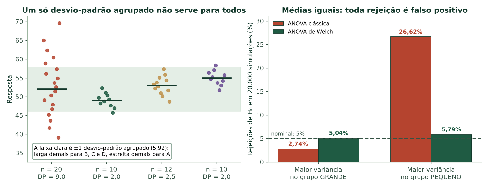
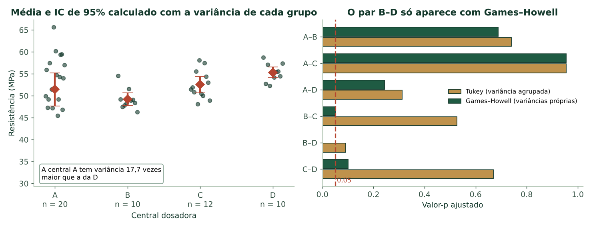

ANOVA de Welch
Compara médias de três ou mais grupos sem supor variâncias iguais, ponderando cada grupo pela precisão da sua média.
Comece por aqui
A ANOVA de um fator divide a variação entre os grupos por uma única estimativa de ruído, o quadrado médio do resíduo, calculada agrupando todos os grupos. Isso só faz sentido se todos tiverem a mesma variância. Quando não têm — e isso é a regra, não a exceção, em dados reais — esse denominador comum descreve mal cada grupo, e o teste deixa de valer. A ANOVA de Welch dá a cada média o peso que a precisão dela merece.
Assim como o teste t de Welch dispensa a hipótese de variâncias iguais na comparação de dois grupos, a ANOVA de Welch faz o mesmo para três ou mais. E, como lá, o custo em poder quando as variâncias são iguais é pequeno, enquanto o ganho em validade quando não são é grande.
O que é o teste
Na ANOVA clássica, todos os grupos entram na conta com o mesmo desvio-padrão agrupado. Na de Welch, cada grupo recebe um peso \(w_i=n_i/s_i^2\) — o inverso da variância da sua própria média. Grupos medidos com precisão pesam mais; grupos dispersos ou pequenos pesam menos. Os graus de liberdade do denominador também deixam de ser \(N-k\) e passam a ser estimados a partir dos dados.

A heterogeneidade distorce a ANOVA clássica nos dois sentidos, e o que decide a direção é o pareamento entre tamanho e variância. Se o grupo com maior variância é também o maior, o quadrado médio do resíduo fica inflado, o teste vira conservador e perde poder (2,74% de rejeições em vez de 5%). Se a maior variância está no grupo menor, o resíduo fica subestimado e o teste vira liberal, produzindo falsos positivos em excesso. Só o segundo caso costuma ser lembrado, mas o primeiro é igualmente danoso: ele faz desaparecer efeitos reais.
Pressupostos e como verificá-los
| Pressuposto | Por que importa | Como verificar |
|---|---|---|
| Observações independentes | Continua sendo indispensável. | Delineamento. |
| Normalidade dentro de cada grupo | É o que sustenta a aproximação F. | by(y, g, shapiro.test); Q-Q por grupo. Não use os resíduos agrupados. |
| Variâncias homogêneas | Não é exigida — é justamente o que se dispensa. | Verifique ainda assim, para decidir entre esta ANOVA e a clássica. |
| Pelo menos cerca de 5 a 10 observações por grupo | A estimativa dos graus de liberdade depende de cada s². | Conte as observações. |
| Ausência de valores extremos dominantes | As variâncias amostrais ficam instáveis. | Boxplots; considere médias aparadas (ver Yuen). |
No exemplo desta ficha, o Shapiro–Wilk aplicado aos resíduos agrupados devolve p = 0,0001, enquanto o mesmo teste aplicado grupo a grupo não acusa problema algum (p entre 0,07 e 0,89). Não há violação de normalidade: o que ocorre é que juntar resíduos de grupos com variâncias muito diferentes produz uma mistura de normais, cuja forma tem caudas mais pesadas que a normal. É mais um sintoma da heterogeneidade — e mais uma razão para, aqui, testar a normalidade dentro de cada grupo.
Hipóteses e estatística de teste
Em que:
- \(w_i\)
- peso do grupo i: o inverso da variância estimada da sua média
- \(\bar{y}_i,\ s_i^2,\ n_i\)
- média, variância e tamanho do grupo i
- \(\tilde{\mu}\)
- média geral ponderada pelos pesos
- \(\Lambda\)
- medida do desequilíbrio entre os pesos
- \(\nu\)
- graus de liberdade do denominador, estimados a partir dos dados
Exemplo numérico, passo a passo
Com os dados das quatro centrais dosadoras:
| Central | n | Média | Variância | w = n/s² | w(média − μ̃)² |
|---|---|---|---|---|---|
| A | 20 | 51,435 | 72,644 | 0,2753 | 0,3748 |
| B | 10 | 49,170 | 5,525 | 1,8101 | 21,3173 |
| C | 12 | 52,525 | 10,604 | 1,1317 | 0,0067 |
| D | 10 | 55,320 | 4,106 | 2,4353 | 17,9945 |
A soma dos pesos é 5,6524 e a média ponderada \(\tilde{\mu}=52{,}6017\). Note que a central A, apesar de ter o dobro de observações de B, recebe um peso seis vezes menor: sua variância é treze vezes maior.
O numerador é \[\begin{aligned}&(0{,}3748+21{,}3173+0{,}0067 \\ &\quad +17{,}9945)/3 \\ &= 13{,}2311.\end{aligned}\]
\(\Lambda=0{,}193116\), de modo que o denominador vale \(1+\frac{2\times2}{15}\times0{,}193116=1{,}051497\).
A ANOVA clássica, nos mesmos dados, devolve \(F=2{,}021\) com \(p=0{,}123\): não detectaria nada.
Propriedades
- Com variâncias iguais, \(F_W\) é muito próximo do F clássico, e a perda de poder é pequena.
- \(\nu\) não é inteiro e nunca excede \(N-k\).
- Com k = 2, equivale ao teste t de Welch.
- Mantém a taxa de erro perto do nominal numa faixa ampla de configurações de n e de variância.
- É sensível a desvios de normalidade quando os grupos são pequenos; nesse caso, considere médias aparadas ou bootstrap.
- Não tem tabela de somas de quadrados: como os pesos variam, não há decomposição aditiva da variação total.
Como interpretar os resultados
| Elemento | O que informa | Cuidado |
|---|---|---|
| F | Dispersão ponderada das médias. | Não vem de uma tabela de somas de quadrados. |
| num df | k − 1. | Igual ao da ANOVA clássica. |
| denom df | ν, estimado dos dados. | Fracionário; menor que N − k. |
| Valor-p | Evidência de diferença entre as médias. | Não indica quais grupos diferem. |
| Médias com IC próprio | Comparação visual honesta. | Use o erro-padrão de cada grupo, nunca o agrupado. |
| Games–Howell | Pares que diferem. | Tukey não serve aqui. |
Reporte: F, os dois graus de liberdade (o segundo com casas decimais), o valor-p, as médias com desvios-padrão e tamanhos de cada grupo, e as comparações de Games–Howell.
Como executar no R e em Python
Onde executar o código em Python
Não é preciso instalar nada: o Google Colab é um computador na nuvem, gratuito, que executa Python pelo navegador e já traz as bibliotecas usadas aqui (numpy, scipy e matplotlib).
oneway.test() está no pacote stats, já instalado com o R: o argumento var.equal = FALSE (que é o padrão) produz a ANOVA de Welch, e TRUE reproduz a clássica. Para as comparações múltiplas, rstatix::games_howell_test() ou PMCMRplus::gamesHowellTest(); pairwise.t.test() com pool.sd = FALSE é uma alternativa aceitável. car::leveneTest() com center = median fornece o Brown–Forsythe.
oneway.test(resistencia ~ central, data = dados, var.equal = FALSE)
rstatix::games_howell_test(dados, resistencia ~ central)
Exemplo de aplicação
Contexto dos dados
Os dados do exemplo são fictícios e foram criados pelo autor. Quatro centrais dosadoras forneceram concreto para uma obra e os corpos de prova foram rompidos aos 28 dias. O número de amostras difere entre as centrais, e a central A, que forneceu o maior volume, tem o processo visivelmente menos controlado.
Código em R
# ANOVA de Welch: exemplo completo ----
# Pacotes: stats (base), car (Brown-Forsythe), rstatix ou PMCMRplus (Games-Howell)
# install.packages(c("car", "rstatix"))
library(car)
# 1. Dados fictícios: resistência à compressão (MPa) de corpos de prova de concreto
# de quatro centrais dosadoras, com números de amostras diferentes.
resistencia <- c(57.0, 54.0, 51.5, 31.1, 55.9, 32.9, 60.2, 57.5, 59.5, 59.4,
54.7, 47.2, 49.2, 65.6, 46.8, 49.9, 45.5, 47.3, 49.2, 54.3,
48.4, 48.3, 47.8, 49.2, 46.3, 49.1, 51.6, 47.5, 48.9, 54.6,
50.5, 48.9, 51.9, 57.5, 58.1, 50.0, 54.4, 53.0, 51.5, 48.1, 55.6, 50.8,
55.6, 55.2, 58.7, 57.4, 52.7, 54.5, 57.1, 52.3, 54.2, 55.5)
central <- factor(rep(c("A", "B", "C", "D"), times = c(20, 10, 12, 10)))
dados <- data.frame(central, resistencia)
aggregate(resistencia ~ central, data = dados,
FUN = function(x) c(n = length(x), media = mean(x), dp = sd(x), var = var(x)))
# 2. O pressuposto que decide qual ANOVA usar
leveneTest(resistencia ~ central, data = dados, center = median) # Brown-Forsythe
bartlett.test(resistencia ~ central, data = dados)
v <- tapply(dados$resistencia, dados$central, var)
max(v) / min(v) # razão entre as variâncias
boxplot(resistencia ~ central, data = dados, col = "gray85")
# 3. As duas ANOVAs, lado a lado
oneway.test(resistencia ~ central, data = dados, var.equal = TRUE) # clássica
oneway.test(resistencia ~ central, data = dados, var.equal = FALSE) # de Welch
summary(aov(resistencia ~ central, data = dados)) # igual à clássica
# 4. Normalidade: examine POR GRUPO, não nos resíduos agrupados
by(dados$resistencia, dados$central, shapiro.test)
shapiro.test(residuals(aov(resistencia ~ central, data = dados)))
# 5. Comparações múltiplas compatíveis com variâncias desiguais
library(rstatix)
games_howell_test(dados, resistencia ~ central)
# alternativas: PMCMRplus::gamesHowellTest(resistencia ~ central, data = dados)
# pairwise.t.test(dados$resistencia, dados$central, pool.sd = FALSE,
# p.adjust.method = "holm")
TukeyHSD(aov(resistencia ~ central, data = dados)) # para comparar: usa variância agrupada
# 6. Tamanho de efeito
tab <- summary(aov(resistencia ~ central, data = dados))[[1]]
tab[1, "Sum Sq"] / sum(tab[, "Sum Sq"]) # eta ao quadrado
# 7. Gráficos
par(mfrow = c(1, 2))
medias <- tapply(dados$resistencia, dados$central, mean)
eps <- tapply(dados$resistencia, dados$central, function(x) sd(x) / sqrt(length(x)))
plot(1:4, medias, ylim = range(dados$resistencia), pch = 18, cex = 2, xaxt = "n",
xlab = "Central", ylab = "Resistência (MPa)")
axis(1, at = 1:4, labels = levels(dados$central))
arrows(1:4, medias - 1.96 * eps, 1:4, medias + 1.96 * eps, angle = 90, code = 3, length = 0.1)
boxplot(resistencia ~ central, data = dados, col = "gray85",
xlab = "Central", ylab = "Resistência (MPa)")
par(mfrow = c(1, 1))
A mesma análise em Python, com os resultados
Cole o código em um notebook do Google Colab ↗ e execute com Shift+Enter. Os valores abaixo são a saída desse código.
# Bibliotecas: numpy, scipy e matplotlib (já instaladas no Google Colab)
import numpy as np
from scipy import stats
import itertools
# Dados fictícios: resistência à compressão (MPa) de corpos de prova de concreto
# de quatro centrais dosadoras. A central A tem o processo menos controlado:
# muitos corpos de prova e dispersão muito maior que as demais.
A = np.array([57.0, 54.0, 51.5, 31.1, 55.9, 32.9, 60.2, 57.5, 59.5, 59.4,
54.7, 47.2, 49.2, 65.6, 46.8, 49.9, 45.5, 47.3, 49.2, 54.3])
B = np.array([48.4, 48.3, 47.8, 49.2, 46.3, 49.1, 51.6, 47.5, 48.9, 54.6])
C = np.array([50.5, 48.9, 51.9, 57.5, 58.1, 50.0, 54.4, 53.0, 51.5, 48.1, 55.6, 50.8])
D = np.array([55.6, 55.2, 58.7, 57.4, 52.7, 54.5, 57.1, 52.3, 54.2, 55.5])
grupos = [A, B, C, D]
nomes = ["A", "B", "C", "D"]
k = len(grupos)
ns = np.array([len(g) for g in grupos], dtype=float)
N = int(ns.sum())
medias = np.array([g.mean() for g in grupos])
vars_ = np.array([g.var(ddof=1) for g in grupos])
todos = np.concatenate(grupos)
print("central n média DP variância EP da média")
for i, nm in enumerate(nomes):
print(f" {nm} {int(ns[i]):2d} {medias[i]:6.3f} {np.sqrt(vars_[i]):5.3f} {vars_[i]:7.3f} {np.sqrt(vars_[i]/ns[i]):.3f}")
print(f"Razão entre a maior e a menor variância = {vars_.max()/vars_.min():.2f}")
# 1. Pressupostos
res = np.concatenate([g - g.mean() for g in grupos])
print(f"\nShapiro-Wilk dos resíduos: W = {stats.shapiro(res)[0]:.4f}, p-valor = {stats.shapiro(res)[1]:.4f}")
for nm, g in zip(nomes, grupos):
print(f" Shapiro-Wilk (central {nm}): p-valor = {stats.shapiro(g)[1]:.4f}")
print(f"Levene (centro = média): W = {stats.levene(*grupos, center='mean')[0]:.4f}, p-valor = {stats.levene(*grupos, center='mean')[1]:.5f}")
print(f"Brown-Forsythe (mediana): W = {stats.levene(*grupos, center='median')[0]:.4f}, p-valor = {stats.levene(*grupos, center='median')[1]:.5f}")
print(f"Bartlett: qui-quadrado = {stats.bartlett(*grupos)[0]:.4f}, p-valor = {stats.bartlett(*grupos)[1]:.3e}")
# 2. ANOVA clássica (de variância agrupada)
SQ_entre = np.sum(ns * (medias - todos.mean())**2)
SQ_dentro = np.sum((ns - 1) * vars_)
gl1, gl2 = k - 1, N - k
QM_entre, QM_dentro = SQ_entre / gl1, SQ_dentro / gl2
Fc = QM_entre / QM_dentro
pc = stats.f.sf(Fc, gl1, gl2)
print("\nANOVA clássica")
print("Fonte GL SQ QM F p-valor")
print(f"Central {gl1:3d} {SQ_entre:8.3f} {QM_entre:7.3f} {Fc:.4f} {pc:.5f}")
print(f"Resíduo {gl2:3d} {SQ_dentro:8.3f} {QM_dentro:7.3f}")
print(f"QM do resíduo = {QM_dentro:.3f} -> DP agrupado = {np.sqrt(QM_dentro):.3f} MPa")
print(f"scipy: {stats.f_oneway(*grupos)}")
# 3. ANOVA de Welch, passo a passo
w = ns / vars_ # peso de cada grupo: precisão da média
mu_w = np.sum(w * medias) / np.sum(w) # média geral ponderada
print("\nANOVA de Welch, passo a passo")
print("central w = n/s² contribuição w(média - mu_w)²")
for i, nm in enumerate(nomes):
print(f" {nm} {w[i]:7.4f} {w[i]*(medias[i]-mu_w)**2:8.4f}")
print(f"Soma dos pesos = {w.sum():.4f} | média geral ponderada mu_w = {mu_w:.4f}")
lam = np.sum((1 - w / w.sum())**2 / (ns - 1))
Aw = np.sum(w * (medias - mu_w)**2) / (k - 1)
Bw = 1 + 2 * (k - 2) / (k**2 - 1) * lam
Fw = Aw / Bw
glw = (k**2 - 1) / (3 * lam)
pw = stats.f.sf(Fw, k - 1, glw)
print(f"Numerador A = {Aw:.4f} | lambda = {lam:.6f} | denominador B = {Bw:.6f}")
print(f"F de Welch = {Fw:.4f} | gl = ({k-1}; {glw:.3f}) | p-valor = {pw:.3e}")
# 4. Comparações múltiplas: Tukey (variância agrupada) x Games-Howell (variâncias próprias)
print("\nComparações múltiplas")
print("par diferença Tukey (p ajustado) Games-Howell (p ajustado)")
for i, j in itertools.combinations(range(k), 2):
dif = medias[j] - medias[i]
ep_t = np.sqrt(QM_dentro / 2 * (1/ns[i] + 1/ns[j]))
p_tukey = stats.studentized_range.sf(abs(dif) / ep_t, k, gl2)
ep_gh = np.sqrt((vars_[i]/ns[i] + vars_[j]/ns[j]) / 2)
gl_gh = (vars_[i]/ns[i] + vars_[j]/ns[j])**2 / (
(vars_[i]/ns[i])**2/(ns[i]-1) + (vars_[j]/ns[j])**2/(ns[j]-1))
p_gh = stats.studentized_range.sf(abs(dif) / ep_gh, k, gl_gh)
marca = lambda v: "*" if v < 0.05 else " "
print(f"{nomes[i]} vs {nomes[j]} {dif:+7.3f} {p_tukey:.4f} {marca(p_tukey)}"
f" {p_gh:.4f} {marca(p_gh)} (gl = {gl_gh:.2f})")
# 5. Tamanho de efeito
eta2 = SQ_entre / (SQ_entre + SQ_dentro)
print(f"\neta² = {eta2:.4f} (ANOVA clássica)")
print(f"omega² = {(SQ_entre - gl1*QM_dentro)/(SQ_entre + SQ_dentro + QM_dentro):.4f}")
# 6. Simulação: taxa de erro tipo I quando as variâncias diferem e as médias são iguais
print("\nSimulação: 20.000 experimentos com as MESMAS médias populacionais (52 MPa)")
print("e os desvios-padrão e tamanhos deste exemplo (20/9; 10/2; 12/2,5; 10/2).")
rng = np.random.default_rng(2026)
ns_sim = [20, 10, 12, 10]
sd_sim = [9.0, 2.0, 2.5, 2.0]
rej_c = rej_w = 0
M = 20000
for _ in range(M):
gs = [rng.normal(52.0, s, n) for n, s in zip(ns_sim, sd_sim)]
if stats.f_oneway(*gs)[1] < 0.05:
rej_c += 1
m = np.array([g.mean() for g in gs]); v = np.array([g.var(ddof=1) for g in gs])
nn = np.array(ns_sim, dtype=float); ww = nn / v
muw = np.sum(ww*m)/ww.sum()
lm = np.sum((1 - ww/ww.sum())**2/(nn-1))
fw = (np.sum(ww*(m-muw)**2)/(k-1)) / (1 + 2*(k-2)/(k**2-1)*lm)
if stats.f.sf(fw, k-1, (k**2-1)/(3*lm)) < 0.05:
rej_w += 1
print(f"ANOVA clássica rejeita H0 em {100*rej_c/M:.2f}% dos casos (o nominal é 5%)")
print(f"ANOVA de Welch rejeita H0 em {100*rej_w/M:.2f}% dos casos")
# 7. Cenário inverso: variância grande no grupo PEQUENO
print("\nCenário inverso: a maior variância no grupo de menor tamanho (10/2; 12/2,5; 20/2; 6/9)")
rng = np.random.default_rng(7)
ns_inv = [10, 12, 20, 6]
sd_inv = [2.0, 2.5, 2.0, 9.0]
rej_c = rej_w = 0
for _ in range(M):
gs = [rng.normal(52.0, s, n) for n, s in zip(ns_inv, sd_inv)]
if stats.f_oneway(*gs)[1] < 0.05:
rej_c += 1
m = np.array([g.mean() for g in gs]); v = np.array([g.var(ddof=1) for g in gs])
nn = np.array(ns_inv, dtype=float); ww = nn / v
muw = np.sum(ww*m)/ww.sum()
lm = np.sum((1 - ww/ww.sum())**2/(nn-1))
fw = (np.sum(ww*(m-muw)**2)/(k-1)) / (1 + 2*(k-2)/(k**2-1)*lm)
if stats.f.sf(fw, k-1, (k**2-1)/(3*lm)) < 0.05:
rej_w += 1
print(f"ANOVA clássica rejeita H0 em {100*rej_c/M:.2f}% dos casos")
print(f"ANOVA de Welch rejeita H0 em {100*rej_w/M:.2f}% dos casos")
Resultados da execução
central n média DP variância EP da média A 20 51.435 8.523 72.644 1.906 B 10 49.170 2.350 5.525 0.743 C 12 52.525 3.256 10.604 0.940 D 10 55.320 2.026 4.106 0.641 Razão entre a maior e a menor variância = 17.69 Shapiro-Wilk dos resíduos: W = 0.8755, p-valor = 0.0001 Shapiro-Wilk (central A): p-valor = 0.1014 Shapiro-Wilk (central B): p-valor = 0.0710 Shapiro-Wilk (central C): p-valor = 0.5261 Shapiro-Wilk (central D): p-valor = 0.8890 Levene (centro = média): W = 6.2538, p-valor = 0.00114 Brown-Forsythe (mediana): W = 5.8593, p-valor = 0.00171 Bartlett: qui-quadrado = 31.1313, p-valor = 7.976e-07 ANOVA clássica Fonte GL SQ QM F p-valor Central 3 200.005 66.668 2.0208 0.12349 Resíduo 48 1583.565 32.991 QM do resíduo = 32.991 -> DP agrupado = 5.744 MPa scipy: F_onewayResult(statistic=np.float64(2.0208055388171147), pvalue=np.float64(0.1234914737978088)) ANOVA de Welch, passo a passo central w = n/s² contribuição w(média - mu_w)² A 0.2753 0.3748 B 1.8101 21.3173 C 1.1317 0.0067 D 2.4353 17.9945 Soma dos pesos = 5.6524 | média geral ponderada mu_w = 52.6017 Numerador A = 13.2311 | lambda = 0.193116 | denominador B = 1.051497 F de Welch = 12.5831 | gl = (3; 25.891) | p-valor = 2.893e-05 Comparações múltiplas par diferença Tukey (p ajustado) Games-Howell (p ajustado) A vs B -2.265 0.7397 0.6886 (gl = 24.04) A vs C +1.090 0.9540 0.9553 (gl = 26.65) A vs D +3.885 0.3116 0.2429 (gl = 22.92) B vs C +3.355 0.5276 0.0504 (gl = 19.66) B vs D +6.150 0.0918 0.0000 * (gl = 17.62) C vs D +2.795 0.6691 0.1005 (gl = 18.67) eta² = 0.1121 (ANOVA clássica) omega² = 0.0556 Simulação: 20.000 experimentos com as MESMAS médias populacionais (52 MPa) e os desvios-padrão e tamanhos deste exemplo (20/9; 10/2; 12/2,5; 10/2). ANOVA clássica rejeita H0 em 2.74% dos casos (o nominal é 5%) ANOVA de Welch rejeita H0 em 5.04% dos casos Cenário inverso: a maior variância no grupo de menor tamanho (10/2; 12/2,5; 20/2; 6/9) ANOVA clássica rejeita H0 em 26.62% dos casos ANOVA de Welch rejeita H0 em 5.79% dos casos

| Elemento | Valor | Leitura |
|---|---|---|
| Brown–Forsythe | W = 5,859; p = 0,0017 | Variâncias claramente heterogêneas. |
| Razão entre variâncias | 17,69 | Muito acima do tolerável para a ANOVA clássica. |
| ANOVA clássica | F(3; 48) = 2,021; p = 0,1235 | Não detecta diferença. |
| ANOVA de Welch | F(3; 25,891) = 12,583; p = 2,9 × 10⁻⁵ | Detecta com folga. |
| Shapiro–Wilk por grupo | p entre 0,071 e 0,889 | Normalidade aceitável em todos. |
| Shapiro–Wilk dos resíduos agrupados | p = 0,0001 | Reflete a heterogeneidade, não a não normalidade. |
| Tukey B–D | p = 0,0918 | Não significativo. |
| Games–Howell B–D | p < 0,0001 (gl = 17,62) | Significativo. |
| Games–Howell B–C | p = 0,0504 | No limite. |
| η² (da ANOVA clássica) | 0,112 | Subestimado, pelo mesmo motivo. |
Leitura: as centrais não entregam concreto com a mesma resistência média. A diferença mais nítida é entre B (49,17 MPa) e D (55,32 MPa), 6,15 MPa de distância — relevante em termos de projeto estrutural.
O que torna este exemplo interessante é que a ANOVA clássica não encontra nada: p = 0,123. O motivo está na central A, cujo desvio-padrão de 8,52 MPa é quatro vezes o das demais. Como A tem 20 das 52 observações, ela domina o quadrado médio do resíduo, que sobe para 32,99 (desvio-padrão agrupado de 5,74 MPa) e passa a servir de régua para comparar B com D — duas centrais cujo desvio-padrão real é de cerca de 2 MPa. É como medir a espessura de uma folha de papel com uma trena. Welch simplesmente deixa de impor a régua comum.
Vale notar que a dispersão da central A não é um estorvo estatístico: é um achado. Um processo com desvio-padrão de 8,5 MPa e corpos de prova rompendo a 31 MPa merece investigação independentemente de qualquer teste de média.
Erros comuns
| Erro | Como evitar |
|---|---|
| Decidir usar Welch só quando o teste de homogeneidade rejeita | Esse encadeamento de testes distorce a taxa de erro; muitos autores recomendam usar Welch por padrão. |
| Aplicar Tukey depois de uma ANOVA de Welch | Tukey usa variância agrupada; use Games–Howell. |
| Reportar os graus de liberdade arredondados para inteiro | ν é fracionário e deve ser informado como tal. |
| Procurar uma tabela de somas de quadrados | Ela não existe aqui: os pesos variam entre os grupos. |
| Testar normalidade nos resíduos agrupados | Com variâncias desiguais eles formam uma mistura; teste por grupo. |
| Desenhar barras de erro com o erro-padrão agrupado | Use o erro-padrão de cada grupo. |
| Achar que Welch resolve assimetria e valores extremos | Ele trata variâncias desiguais, não a forma da distribuição. |
| Supor que a ANOVA clássica só erra para mais | Quando a maior variância está no grupo maior, ela perde poder. |
Alternativas e fluxo de trabalho
| Procedimento | Quando preferir |
|---|---|
| ANOVA clássica | Variâncias homogêneas e grupos balanceados. |
ANOVA de Brown–Forsythe (onewaytests::bf.test) | Outra correção para variâncias desiguais; desempenho parecido. |
ANOVA de médias aparadas (WRS2::t1way) | Caudas pesadas ou valores extremos (ver Yuen). |
| Kruskal–Wallis | Resposta ordinal ou assimetria forte; atenção, ele também é sensível a variâncias desiguais. |
| Teste de Brunner–Munzel generalizado | Formas de distribuição diferentes entre os grupos. |
| Bootstrap | Amostras pequenas; qualquer estatística de interesse. |
| Mínimos quadrados ponderados | Modelar explicitamente a variância de cada grupo. |
Modelo com variância por grupo (nlme::gls, weights = varIdent) | Estrutura de variância a estimar, com covariáveis. |
- Descreva cada grupo: n, média, desvio-padrão e variância.
- Calcule a razão entre a maior e a menor variância e faça o boxplot.
- Verifique a normalidade dentro de cada grupo.
- Aplique a ANOVA de Welch (e, se quiser contrastar, a clássica também).
- Reporte F, os dois graus de liberdade e o valor-p.
- Faça as comparações de Games–Howell.
- Apresente cada média com o intervalo construído a partir da sua própria variância.
Referências desta ficha
- WELCH, B. L. On the comparison of several mean values: an alternative approach. Biometrika, v. 38, n. 3-4, p. 330-336, 1951.
- GAMES, Paul A.; HOWELL, John F. Pairwise multiple comparison procedures with unequal n’s and/or variances: a Monte Carlo study. Journal of Educational Statistics, v. 1, n. 2, p. 113-125, 1976.
- BROWN, Morton B.; FORSYTHE, Alan B. The small sample behavior of some statistics which test the equality of several means. Technometrics, v. 16, n. 1, p. 129-132, 1974.
- TOMARKEN, Andrew J.; SERLIN, Ronald C. Comparison of ANOVA alternatives under variance heterogeneity and specific noncentrality structures. Psychological Bulletin, v. 99, n. 1, p. 90-99, 1986.
- DELACRE, Marie et al. Taking parametric assumptions seriously: arguments for the use of Welch’s F-test instead of the classical F-test in one-way ANOVA. International Review of Social Psychology, v. 32, n. 1, art. 13, 2019.
- MONTGOMERY, Douglas C. Design and analysis of experiments. 10. ed. Hoboken: Wiley, 2019.
- MAXWELL, Scott E.; DELANEY, Harold D.; KELLEY, Ken. Designing experiments and analyzing data: a model comparison perspective. 3. ed. New York: Routledge, 2018.
- R CORE TEAM. R: a language and environment for statistical computing. Vienna: R Foundation for Statistical Computing, 2026. Disponível em: https://www.r-project.org/. (Função
oneway.test, pacotestats.) - KASSAMBARA, Alboukadel. rstatix: pipe-friendly framework for basic statistical tests. R package. Disponível em: https://CRAN.R-project.org/package=rstatix. (Função
games_howell_test.) - FOX, John; WEISBERG, Sanford. An R companion to applied regression. 3. ed. Thousand Oaks: Sage, 2019. (Pacote
car.) - POSIT TEAM. RStudio: integrated development environment for R. Boston: Posit Software, PBC. Disponível em: https://posit.co/download/rstudio-desktop/.
- VIRTANEN, Pauli et al. SciPy 1.0: fundamental algorithms for scientific computing in Python. Nature Methods, v. 17, p. 261-272, 2020. DOI: 10.1038/s41592-019-0686-2. (Funções do módulo
scipy.stats.) - HARRIS, Charles R. et al. Array programming with NumPy. Nature, v. 585, p. 357-362, 2020. DOI: 10.1038/s41586-020-2649-2.
- HUNTER, John D. Matplotlib: a 2D graphics environment. Computing in Science & Engineering, v. 9, n. 3, p. 90-95, 2007.
- GOOGLE. Google Colaboratory. Disponível em: https://colab.research.google.com/.
- As figuras desta ficha foram elaboradas pelo autor.

Prof. Dr. Cássius Henrique Xavier Oliveira
Professor · ICTIN/UFLA · Estatística, Confiabilidade e Ciência de Dados.
Conheça minha trajetória e projetos →